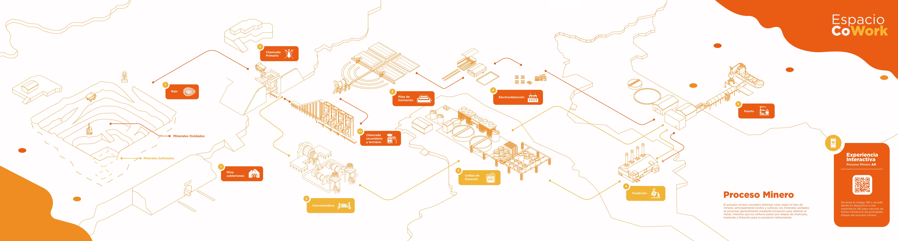

Proceso minero · 10 estaciones
Estación
1El CAEX ingresa vacío al rajo
1El dumper ingresa en reversa
1Sube por la correa de alimentación
1En el tambor, el agua y el ácido aglomeran y curan el mineral
1La correa alimenta el molino SAG
1Ingresa con la tolva cargada
Experiencia interactiva · Proceso Minero
Apunta la cámara al Rajo, la Mina subterránea, el Chancado Primario o el Chancado secundario y terciario de la infografía. Sobre cada estación se abre una lámina viva: mira el terreno por dentro, sigue el carguío y el transporte del mineral y conoce los equipos.
Encuadra una estación con animación: Rajo, Mina, Chancado 2 o 2.2